<title>Layered Human Checkpoint 2</title>
<meta name="claude:viewport-fit-sides" content="cover">
<style>
:root {
  color-scheme: dark;
  --wall: #1d2227; --wall-2: #2a3138; --spot: #3d4750; --mount: #22282e;
  --text: #efece6; --text-2: #c7c6c1; --text-3: #a2a39f;
  --brass: #d4b47e; --brass-2: #e3caa0;
  --line: #3e4851; --line-2: #56626d;
  --slate-wall: #2a3138; --slate-spot: #3d4750; --slate-text: #efece6; --slate-text-2: #c7c6c1; --slate-accent: #d4b47e; --slate-line: #56626d;
  --green-wall: #24302b; --green-spot: #384a42; --green-text: #eef0ea; --green-text-2: #c5cbc3; --green-accent: #d6b67e; --green-line: #53665c;
  --prussian-wall: #1e2637; --prussian-spot: #304060; --prussian-text: #eef0f4; --prussian-text-2: #c4cad6; --prussian-accent: #dcbd8c; --prussian-line: #4c5b78;
  --aubergine-wall: #2d232f; --aubergine-spot: #453748; --aubergine-text: #f2eef1; --aubergine-text-2: #cdc4cb; --aubergine-accent: #dbbf91; --aubergine-line: #5f5262;
  --umber-wall: #2e2823; --umber-spot: #463d35; --umber-text: #f1ede8; --umber-text-2: #cfc7be; --umber-accent: #a9c7d4; --umber-line: #5f554c;
  --charcoal-wall: #222325; --charcoal-spot: #36383b; --charcoal-text: #f0efed; --charcoal-text-2: #c9c8c4; --charcoal-accent: #e0c690; --charcoal-line: #505257;
  --serif: "Literata", Georgia, "Times New Roman", serif;
  --sans: "Fira Sans", "Helvetica Neue", Arial, sans-serif;
}
* { box-sizing: border-box; }
html { background: var(--wall); -webkit-text-size-adjust: 100%; }
body { margin: 0; background: var(--wall); color: var(--text); font: 400 17px/1.6 var(--serif); font-optical-sizing: auto; }
.page { max-width: 1240px; margin: 0 auto; padding-block: 56px 96px;
  padding-left: max(16px, env(safe-area-inset-left, 0px)); padding-right: max(16px, env(safe-area-inset-right, 0px)); }
img { display: block; max-width: 100%; height: auto; }
a { color: var(--brass-2); text-underline-offset: 3px; text-decoration-thickness: 1px; }
a:hover { color: var(--text); }
h1, h2, h3 { font-family: var(--serif); font-weight: 350; letter-spacing: -.01em; margin: 0; }
h1 { font-size: clamp(36px, 6vw, 64px); line-height: 1.05; }
h2 { font-size: clamp(28px, 4vw, 40px); line-height: 1.15; padding-top: 28px; border-top: 1px solid var(--line); }
h3 { font-size: clamp(24px, 3vw, 30px); line-height: 1.2; display: flex; align-items: baseline; gap: 14px; flex-wrap: wrap; }
p { margin: 0; max-width: 64ch; }
.intro { display: grid; gap: 22px; margin-bottom: 72px; }
.intro .sub { font-size: clamp(19px, 2.2vw, 22px); line-height: 1.5; color: var(--text-2); max-width: 46ch; }
ol.asks { margin: 0; padding: 0; list-style: none; display: grid; gap: 8px; counter-reset: a; }
ol.asks li { counter-increment: a; display: flex; gap: 12px; }
ol.asks li::before { content: counter(a); font: 500 14px/1.9 var(--sans); color: var(--brass); width: 18px; flex: none; }
.changed { display: grid; gap: 14px; padding-top: 22px; border-top: 1px solid var(--line); margin-top: 6px; }
.changed p { color: var(--text-2); }
.swatches { list-style: none; margin: 4px 0 0; padding: 0; display: grid; gap: 12px; grid-template-columns: repeat(auto-fill, minmax(170px, 1fr)); }
.sw { border: 1px solid; border-radius: 2px; padding: 14px 14px 12px; display: flex; flex-direction: column; gap: 2px; min-height: 108px; }
.sw-name { font: 400 17px/1.3 var(--serif); }
.sw small { font: 400 12px/1.4 var(--sans); }
.chips { display: flex; gap: 6px; margin-top: auto; padding-top: 10px; }
.chips i { width: 22px; height: 10px; border-radius: 1px; }
.sw-slate { background: var(--slate-wall); color: var(--slate-text); border-color: var(--slate-line); }
.sw-slate .chip-spot { background: var(--slate-spot); } .sw-slate .chip-text { background: var(--slate-text); } .sw-slate .chip-accent { background: var(--slate-accent); } .sw-slate small { color: var(--slate-text-2); }
.sw-green { background: var(--green-wall); color: var(--green-text); border-color: var(--green-line); }
.sw-green .chip-spot { background: var(--green-spot); } .sw-green .chip-text { background: var(--green-text); } .sw-green .chip-accent { background: var(--green-accent); } .sw-green small { color: var(--green-text-2); }
.sw-prussian { background: var(--prussian-wall); color: var(--prussian-text); border-color: var(--prussian-line); }
.sw-prussian .chip-spot { background: var(--prussian-spot); } .sw-prussian .chip-text { background: var(--prussian-text); } .sw-prussian .chip-accent { background: var(--prussian-accent); } .sw-prussian small { color: var(--prussian-text-2); }
.sw-aubergine { background: var(--aubergine-wall); color: var(--aubergine-text); border-color: var(--aubergine-line); }
.sw-aubergine .chip-spot { background: var(--aubergine-spot); } .sw-aubergine .chip-text { background: var(--aubergine-text); } .sw-aubergine .chip-accent { background: var(--aubergine-accent); } .sw-aubergine small { color: var(--aubergine-text-2); }
.sw-umber { background: var(--umber-wall); color: var(--umber-text); border-color: var(--umber-line); }
.sw-umber .chip-spot { background: var(--umber-spot); } .sw-umber .chip-text { background: var(--umber-text); } .sw-umber .chip-accent { background: var(--umber-accent); } .sw-umber small { color: var(--umber-text-2); }
.sw-charcoal { background: var(--charcoal-wall); color: var(--charcoal-text); border-color: var(--charcoal-line); }
.sw-charcoal .chip-spot { background: var(--charcoal-spot); } .sw-charcoal .chip-text { background: var(--charcoal-text); } .sw-charcoal .chip-accent { background: var(--charcoal-accent); } .sw-charcoal small { color: var(--charcoal-text-2); }
section { display: grid; gap: 28px; margin-top: 64px; }
.lede { color: var(--text-2); }
.grid { display: grid; gap: 18px; grid-template-columns: repeat(auto-fill, minmax(230px, 1fr)); }
.grid.glance { grid-template-columns: repeat(auto-fill, minmax(min(100%, 520px), 1fr)); gap: 22px; }
figure { margin: 0; }
figcaption { font: 400 13px/1.45 var(--sans); color: var(--text-3); margin-top: 8px; }
.thumb a { display: block; aspect-ratio: 16 / 10; background: var(--mount); border: 1px solid var(--line); border-radius: 2px; overflow: hidden; }
.thumb a img { width: 100%; height: 100%; object-fit: contain; }
.glance .thumb a { aspect-ratio: 16 / 9; }
.thumb a:hover { border-color: var(--line-2); }
.big a { display: block; border: 1px solid var(--line); border-radius: 2px; overflow: hidden; }
.treat, .opt { display: grid; gap: 18px; padding-top: 36px; border-top: 1px solid var(--line); }
.treat .lede, .opt p { max-width: 64ch; }
.rec { font: 500 13px/1 var(--sans); color: var(--brass); border: 1px solid var(--brass); border-radius: 2px; padding: 5px 7px 4px; transform: translateY(-4px); }
.why { color: var(--text); }
.today { display: grid; gap: 14px; }
h4 { font: 500 15px/1.4 var(--sans); color: var(--text-2); margin: 0; }
ul.notes { margin: 0; padding: 0; list-style: none; display: grid; gap: 10px; max-width: 72ch; }
ul.notes li { padding-left: 18px; position: relative; color: var(--text-2); }
ul.notes li::before { content: ""; position: absolute; left: 0; top: .78em; width: 8px; height: 1px; background: var(--line-2); }
.notes-wrap { display: grid; gap: 12px; padding-top: 24px; border-top: 1px solid var(--line); }
.num { font: 500 15px/1 var(--sans); color: var(--brass); border: 1px solid var(--line-2); border-radius: 50%; width: 32px; height: 32px; display: inline-flex; align-items: center; justify-content: center; transform: translateY(-3px); flex: none; }
.cols { display: grid; gap: 14px 40px; grid-template-columns: repeat(auto-fit, minmax(min(100%, 380px), 1fr)); }
.quiet { color: var(--text-2); font-size: 16px; }
.also { color: var(--text-2); padding-top: 24px; border-top: 1px solid var(--line); }
.answer { display: grid; gap: 18px; }
.reply { font: 400 clamp(22px, 3vw, 28px)/1.3 var(--serif); font-style: italic; color: var(--text); padding: 18px 0; border-block: 1px solid var(--line); max-width: none; }
footer { margin-top: 72px; font: 400 13px/1.5 var(--sans); color: var(--text-3); }
@media (max-width: 600px) {
  body { font-size: 16px; }
  .page { padding-block: 36px 64px; }
  section { margin-top: 48px; }
  .grid { gap: 14px; }
  .swatches { grid-template-columns: 1fr; gap: 8px; }
  .sw { display: grid; min-height: 0; grid-template-columns: 1fr auto; align-items: center; padding: 10px 12px; }
  .sw small { grid-column: 1; grid-row: 2; }
  .sw .chips { grid-column: 2; grid-row: 1 / span 2; margin: 0; padding: 0; }
}
.asks.abc li::before { content: counter(a, upper-alpha); }
ul.fixes li { color: var(--text-2); }
.pairs { display: grid; gap: 22px; grid-template-columns: repeat(auto-fill, minmax(min(100%, 520px), 1fr)); }
.grid.tall { grid-template-columns: repeat(auto-fill, minmax(min(100%, 180px), 1fr)); }
.thumb.tall a { aspect-ratio: 3 / 4; }
.thumb.long a { aspect-ratio: 3 / 4; }
.thumb.long a img { object-fit: cover; object-position: top; }
.view { color: var(--text); }
.view b { font-weight: 600; color: var(--brass-2); }
.state { display: grid; gap: 16px; padding-top: 30px; border-top: 1px solid var(--line); }
.grid.five { grid-template-columns: repeat(auto-fill, minmax(min(100%, 180px), 1fr)); }
.state h4 { font: 400 22px/1.3 var(--serif); color: var(--text); }
</style>
<link rel="stylesheet" href="https://fonts.googleapis.com/css2?family=Literata:ital,opsz,wght@0,7..72,200..900;1,7..72,200..900&family=Fira+Sans:wght@400;500;600&display=swap">
<main class="page">

<header class="intro">
  <h1>Layered Human<br>Checkpoint 2</h1>
  <p class="sub">Three choices this time, and two new things to look over. Then reply in one line.</p>
  <ol class="asks abc">
    <li><span><a href="#labels">Labels</a>: how names sit around the body when there are many of them.</span></li>
    <li><span><a href="#gauge">The depth gauge</a>: how the dissection depth is shown beside the body.</span></li>
    <li><span><a href="#libraries">The libraries</a>: how Lessons and Histology lay out their collections.</span></li>
  </ol>
  <p class="lede">New to look at, with no choice to make: <a href="#rooms">the model viewer</a>, the room a model opens into, and <a href="#states">three states</a>: search, a lesson that points at the model, and practice feedback. Your checkpoint 1 picks are <a href="#from-cp1">at the start</a>: the logo and the website.</p>
  <div class="changed">
    <p>Fixed without asking, across the app and the website:</p>
    <ul class="notes fixes">
      <li>One type scale: the app now uses nine sizes, 12 to 44 px, and nothing between.</li>
      <li>One way to mark what is current: a short brass bar under text, a brass outline round pictures.</li>
      <li>Back and forward arrows sit right after the room names, and every header item shares one baseline.</li>
      <li>Every room&rsquo;s content starts on the same line.</li>
      <li>Counts read the same everywhere: &ldquo;2,231 of 3,922 shown &middot; 26% deep&rdquo;.</li>
      <li>Lab names match the course data and use &ldquo;and&rdquo;, not &ldquo;&amp;&rdquo;.</li>
      <li>Model captions say what is inside, such as &ldquo;Chambers, valves, coronary vessels&rdquo;.</li>
      <li>The lesson&rsquo;s step line moved under the title: &ldquo;Step 2 of 7 &middot; The coronary circulation &middot; Advanced&rdquo;.</li>
      <li>Settings has its own title, with its sections in a left column.</li>
      <li>On the website, the scheme switcher moved to the footer and the download warning is explained once, in plain words.</li>
    </ul>

<div class="grid glance"><figure class="thumb"><a href="renders/checkpoint-1/panels/wall_lessons.webp"></a><figcaption>Lessons at checkpoint 1</figcaption></figure><figure class="thumb"><a href="renders/checkpoint-2/library/before_lessons.webp"></a><figcaption>Lessons now. Open both to compare the subtitle, the lab names and the header arrows</figcaption></figure></div>
    <p class="quiet">The option pictures below were made before the new logo, so their app header still shows the old mark.</p>
  </div>
</header>

<section id="from-cp1" aria-labelledby="cp1-h">
  <h2 id="cp1-h">From checkpoint 1</h2>
  <p class="lede">You chose the wall for the panels, Section cut down the midline for the logo, and to keep the download buttons as they are. Wall is now the only panel treatment, in the app and on the website.</p>
  <article class="treat" id="logo"><h3>The logo, cut down the midline</h3>
  <p class="lede">The figure is cut from the crown to the crotch. One half stays skin; the other is the muscle layer in brass, one step back. It is now the Specimen identity: the app icon, the favicon, the lockup, and the headers of the app mockup and the website.</p>
  <figure class="big"><a href="renders/checkpoint-2/logo/before-after.webp">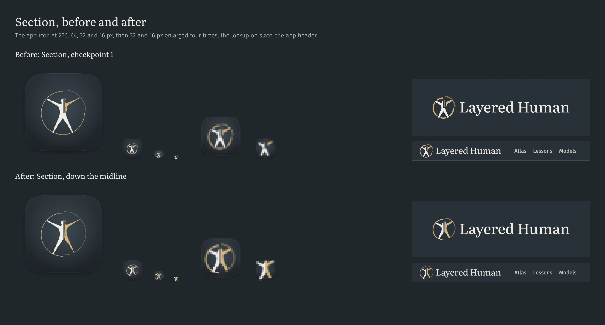</a><figcaption>Before and after, at every size</figcaption></figure>
  <figure class="big"><a href="renders/checkpoint-2/logo/section-midline.webp">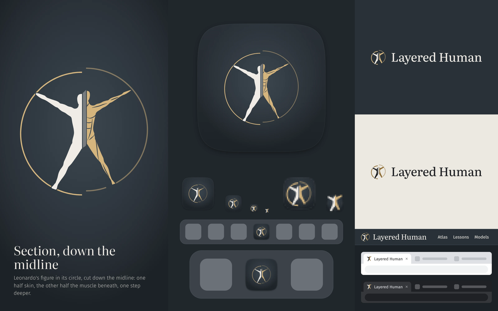</a><figcaption>The board</figcaption></figure>
  <div class="cols"><p>Ten muscle lines are cut into the brass half at large sizes; the 128 px icon and smaller have none. At 16 px the circle goes and the two halves touch, so it reads as one person in two halves. The mark in the lockup is now 2.2 cap heights tall, up from 1.7, so the figure no longer shrinks to a few pixels in the app header.</p><p class="quiet">Worth a look: the half-brass face, which some people may find odd; and the brass half, which looks a little slimmer than the skin half. <a href="renders/checkpoint-2/logo/section-midline-explore.webp">See what was weighed</a>: the head whole or split, and how many muscle lines.</p></div>
  <p class="why">Please confirm the logo, or say what to change.</p></article>
  <article class="treat" id="site"><h3>The website</h3>
  <p class="lede">The first screen now peels. Beside the body is the app&rsquo;s dissection gauge, with the eight stops at their real depths; drag it, use the keys or click a stop, and the real plates change. The biceps label follows: at skin it says the muscle is under the skin, and from 40% it says it is peeled away.</p>
<div class="grid glance"><figure class="thumb"><a href="renders/checkpoint-2/site/hero_skin.webp">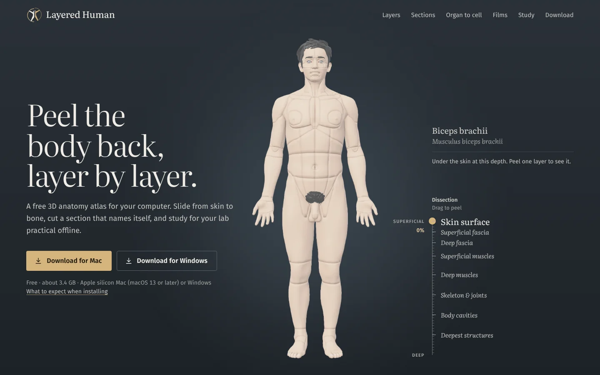</a><figcaption>Skin, 0%</figcaption></figure><figure class="thumb"><a href="renders/checkpoint-2/site/hero_superficial.webp">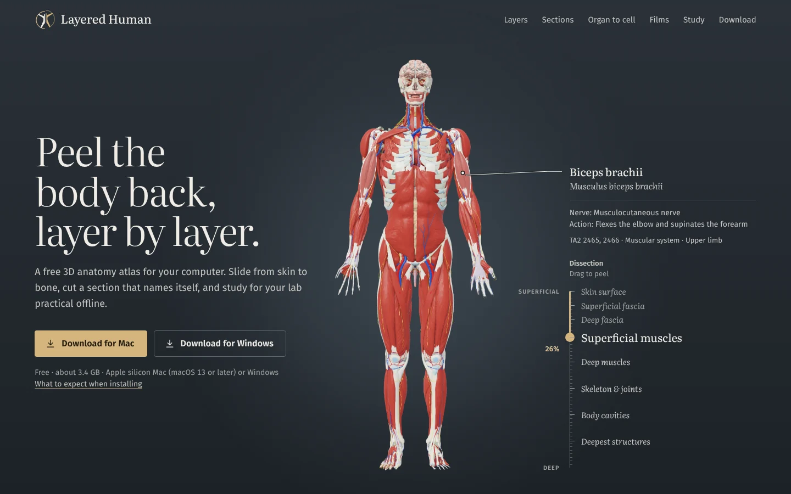</a><figcaption>Superficial muscles, 26%</figcaption></figure><figure class="thumb"><a href="renders/checkpoint-2/site/hero_skeleton.webp">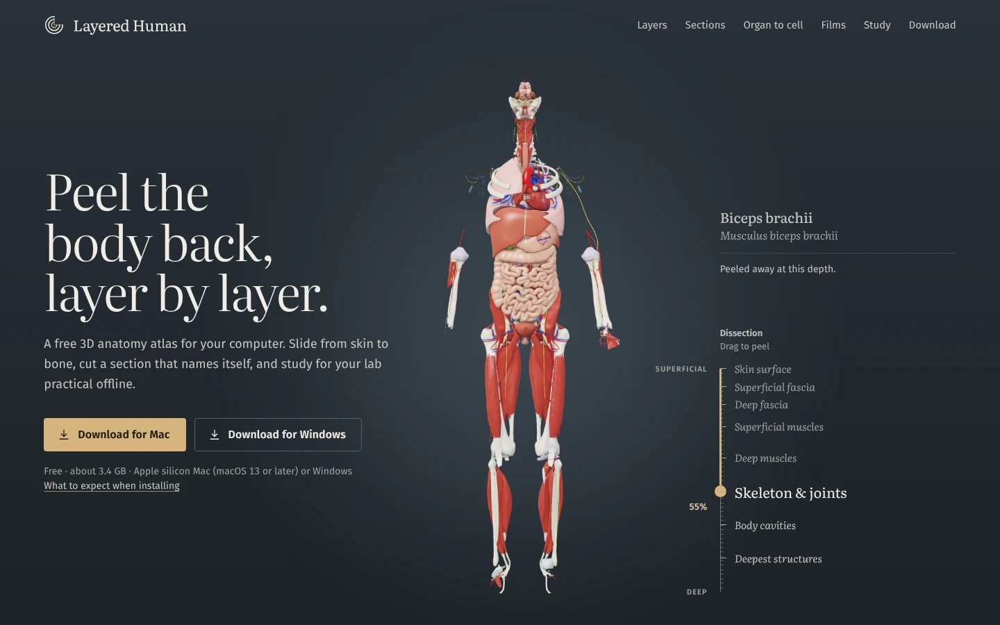</a><figcaption>Skeleton and joints, 55%</figcaption></figure><figure class="thumb"><a href="renders/checkpoint-2/site/hero_focus.webp">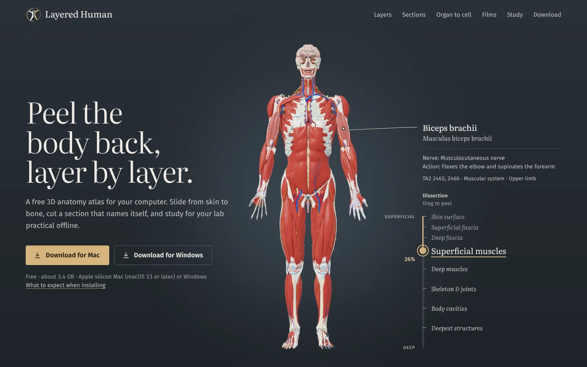</a><figcaption>Keyboard focus on the knob</figcaption></figure></div>
  <p class="lede">The Study section is now one large scene from the app, the lesson text beside the lit heart, in place of two small framed pictures.</p>
  <figure class="big"><a href="renders/checkpoint-2/site/study@2x.webp">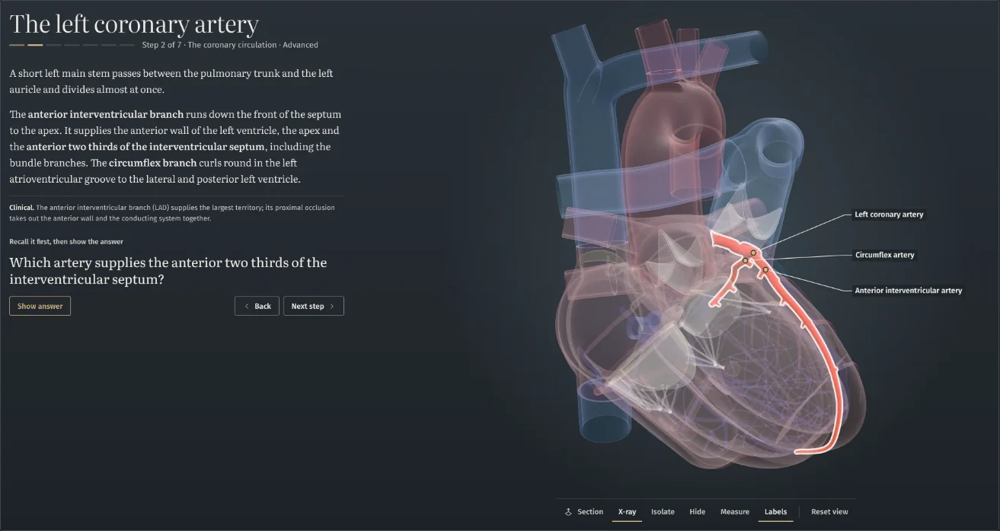</a><figcaption>The study scene at 1440 px. Open for the sharp 2&times; image</figcaption></figure>
  <h4>The whole page, before and after</h4>
<div class="grid"><figure class="thumb long"><a href="renders/checkpoint-2/site/before_1440.webp"></a><figcaption>Before, 1440 px</figcaption></figure><figure class="thumb long"><a href="renders/checkpoint-2/site/after_1440.webp"></a><figcaption>After, 1440 px</figcaption></figure><figure class="thumb long"><a href="renders/checkpoint-2/site/before_390.webp"></a><figcaption>Before, phone</figcaption></figure><figure class="thumb long"><a href="renders/checkpoint-2/site/after_390.webp"></a><figcaption>After, phone</figcaption></figure></div>
  <p class="quiet">Each shows the top of the page; open it for the whole length. The phone pages are scaled down a little, because the full length is too tall for one image file.</p>
  <p class="why">Nothing to choose here. Please flag anything that looks off.</p></article>
</section>

<section id="labels" aria-labelledby="labels-h">
  <h2 id="labels-h">A. Labels</h2>
  <p class="lede">Today&rsquo;s labels are small dark chips over the body. That works for four names, but a lesson or a section can need eighteen, and then the chips start to look like software. Each option is shown on the atlas with twelve names and on a new section screen with eighteen. Every anchor comes from the app&rsquo;s own picking data.</p>
  <div class="today"><h4>Today</h4><div class="grid glance"><figure class="thumb"><a href="renders/checkpoint-2/labels/before_atlas.webp">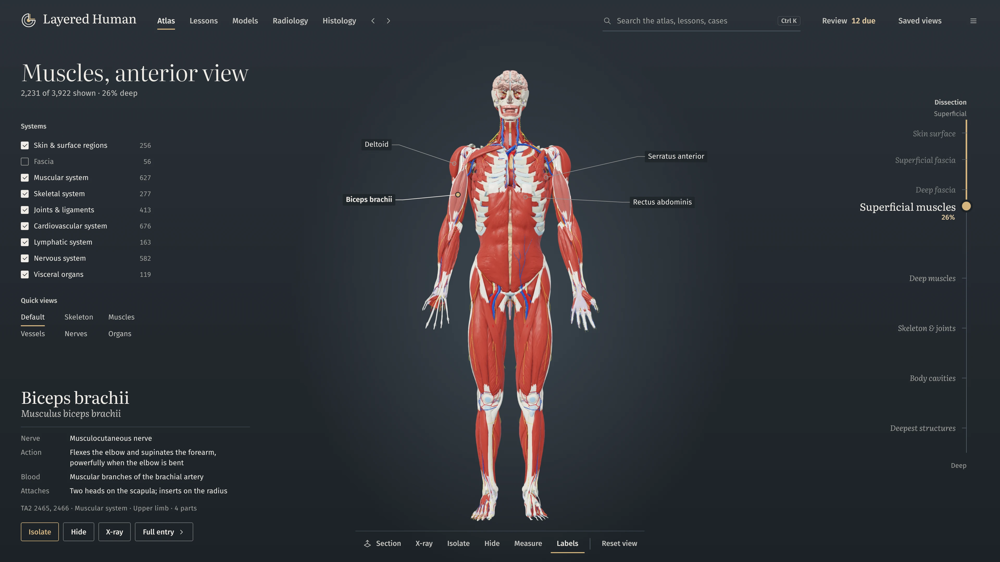</a><figcaption>The atlas today, four labels</figcaption></figure></div></div>
<article class="opt" id="labels-1"><h3><span class="num">1</span>Free lettering <span class="rec">recommended</span></h3><p>Each name is lettered on the wall beside its structure; a name goes on a small chip over the body only when there is no clear wall close enough.</p><p class="why">The agent&rsquo;s pick: on the atlas every name sits right beside its structure, with no chip. I agree for the atlas. On the section, though, the six chips clustered over the heart are exactly the software look we wanted to lose (open the actual-size crop). One way out is to switch to the numbered key of option 3 when a view has more names than fit on the wall; the website already does this between desktop and phone.</p><div class="grid glance"><figure class="thumb"><a href="renders/checkpoint-2/labels/1_atlas.webp">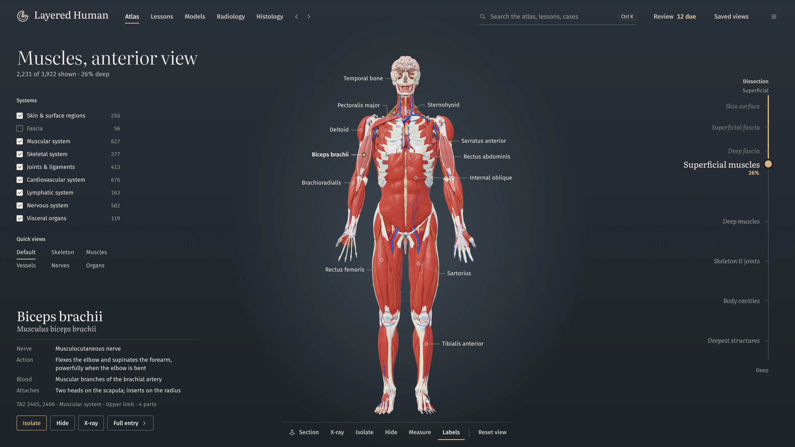</a><figcaption>Atlas, twelve names</figcaption></figure><figure class="thumb"><a href="renders/checkpoint-2/labels/1_section.webp">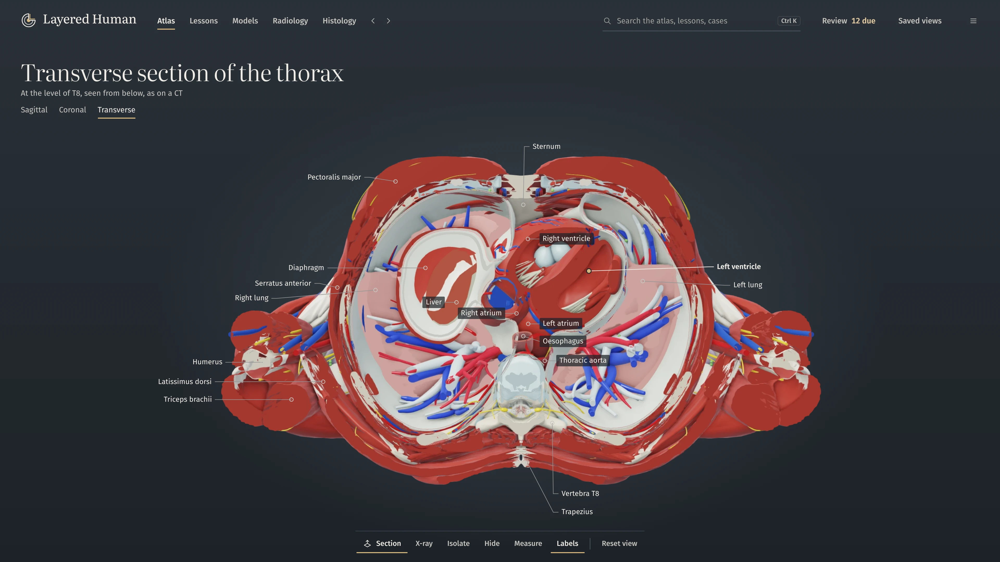</a><figcaption>Section, eighteen names</figcaption></figure></div><div class="grid"><figure class="thumb"><a href="renders/checkpoint-2/labels/1_atlas_crop.webp">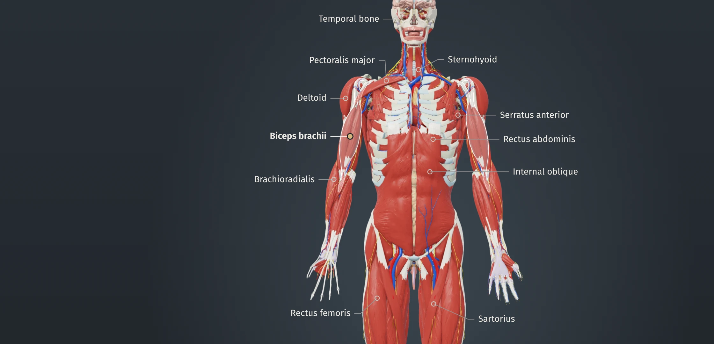</a><figcaption>Atlas, actual size</figcaption></figure><figure class="thumb"><a href="renders/checkpoint-2/labels/1_section_crop.webp">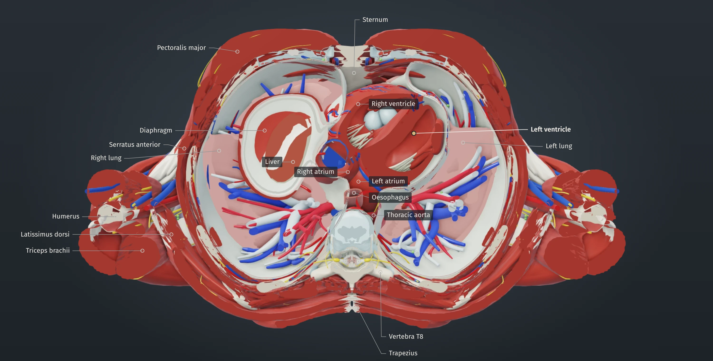</a><figcaption>Section, actual size</figcaption></figure><figure class="thumb"><a href="renders/checkpoint-2/labels/1_section_umber.webp">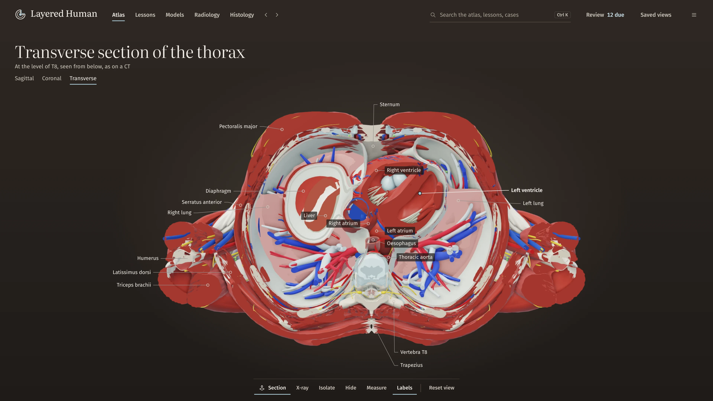</a><figcaption>Section in Umber</figcaption></figure></div></article>
<article class="opt" id="labels-2"><h3><span class="num">2</span>Caption rails</h3><p>The names stack on two rails beside the specimen, in height order, each joined to its point by a leader with one bend.</p><div class="grid glance"><figure class="thumb"><a href="renders/checkpoint-2/labels/2_atlas.webp"></a><figcaption>Atlas, twelve names</figcaption></figure><figure class="thumb"><a href="renders/checkpoint-2/labels/2_section.webp">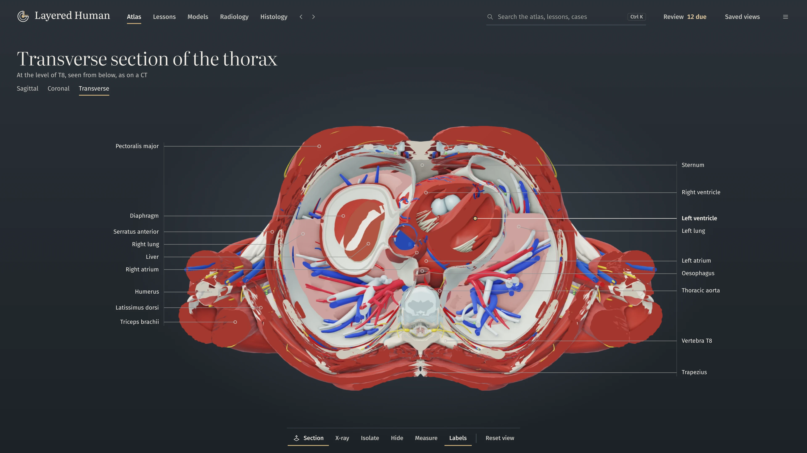</a><figcaption>Section, eighteen names</figcaption></figure></div><div class="grid"><figure class="thumb"><a href="renders/checkpoint-2/labels/2_atlas_crop.webp">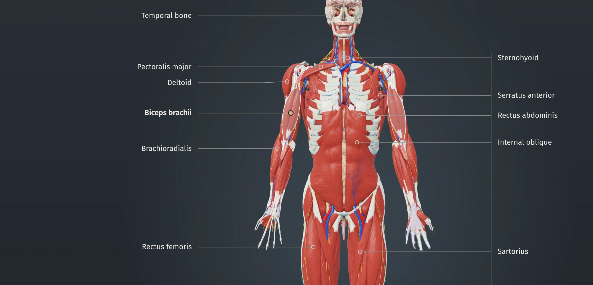</a><figcaption>Atlas, actual size</figcaption></figure><figure class="thumb"><a href="renders/checkpoint-2/labels/2_section_crop.webp">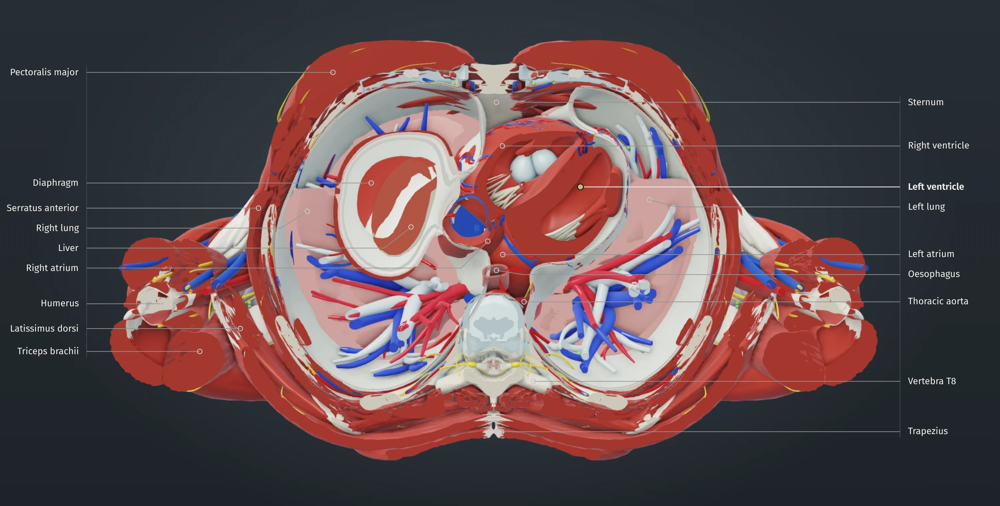</a><figcaption>Section, actual size</figcaption></figure><figure class="thumb"><a href="renders/checkpoint-2/labels/2_section_umber.webp">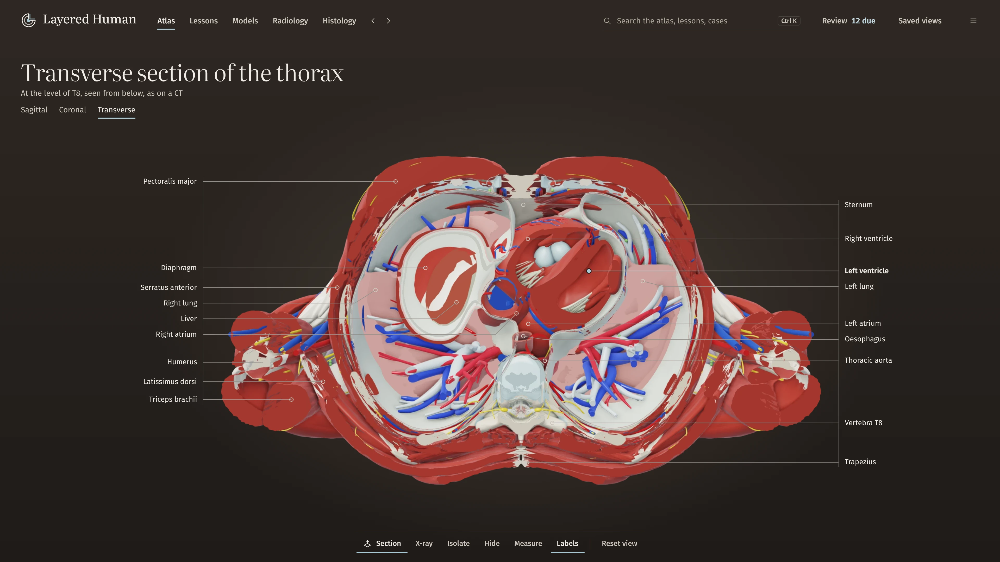</a><figcaption>Section in Umber</figcaption></figure></div></article>
<article class="opt" id="labels-3"><h3><span class="num">3</span>Numbered key</h3><p>Small numbered dots sit on the body, and the names are a numbered list on the wall.</p><div class="grid glance"><figure class="thumb"><a href="renders/checkpoint-2/labels/3_atlas.webp">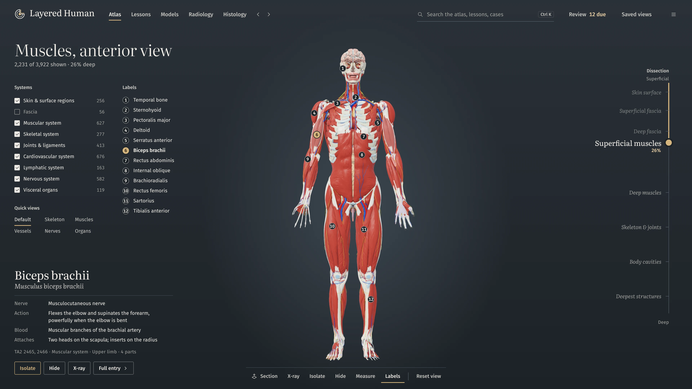</a><figcaption>Atlas, twelve names</figcaption></figure><figure class="thumb"><a href="renders/checkpoint-2/labels/3_section.webp">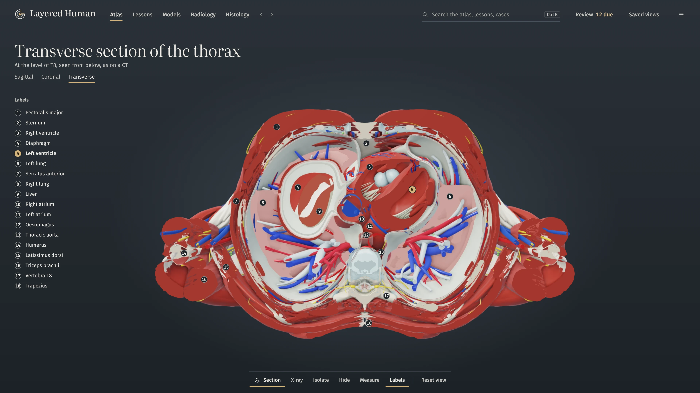</a><figcaption>Section, eighteen names</figcaption></figure></div><div class="grid"><figure class="thumb"><a href="renders/checkpoint-2/labels/3_atlas_crop.webp">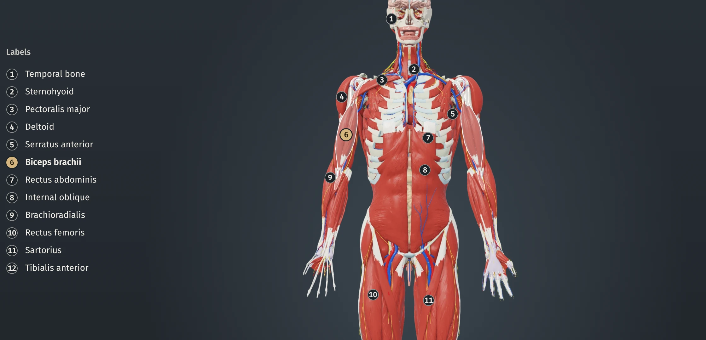</a><figcaption>Atlas, actual size</figcaption></figure><figure class="thumb"><a href="renders/checkpoint-2/labels/3_section_crop.webp">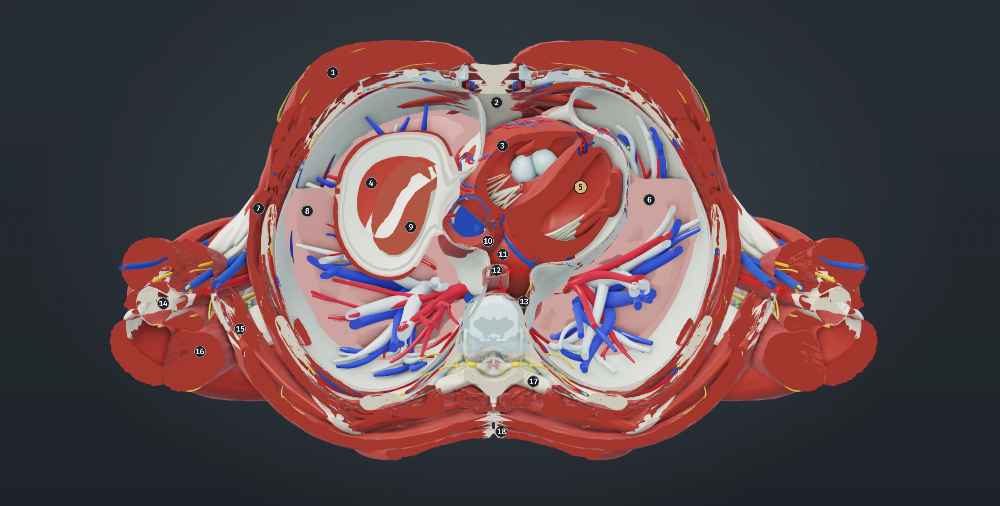</a><figcaption>Section, actual size</figcaption></figure><figure class="thumb"><a href="renders/checkpoint-2/labels/3_section_umber.webp">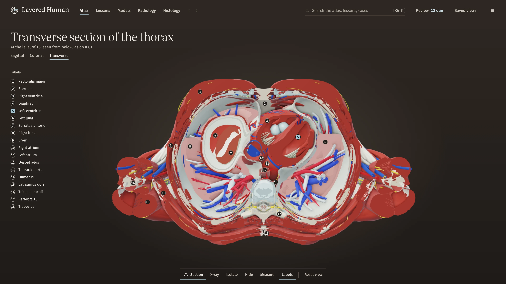</a><figcaption>Section in Umber</figcaption></figure></div></article>
  <div class="notes-wrap"><h4>Notes</h4><ul class="notes">
    <li>Caption rails draw leaders of about 500 px across the cut face on the section, and lean toward the Plate direction.</li>
    <li>The numbered key costs an eye jump for every name. Hovering a dot or a list row would light the pair; that is described but not drawn.</li>
    <li>Three muscles had no visible pixels at 26% deep, so their neighbours are labelled instead: Sternohyoid, Temporal bone and Internal oblique.</li>
  </ul></div>
</section>

<section id="gauge" aria-labelledby="gauge-h">
  <h2 id="gauge-h">B. The depth gauge</h2>
  <p class="lede">The gauge is how you know how deep you are, and it is the one control every 3D room shares. In all three options the stops now sit at their true depths, &ldquo;Superficial&rdquo; and &ldquo;Deep&rdquo; mark the ends, &ldquo;Show only this layer&rdquo; sits next to the stop it acts on, and the knob works from the keyboard.</p>
  <div class="today"><h4>Today</h4><div class="grid glance"><figure class="thumb"><a href="renders/checkpoint-2/gauge/before_atlas.webp"></a><figcaption>Atlas, 26%</figcaption></figure><figure class="thumb"><a href="renders/checkpoint-2/gauge/before_peel.webp">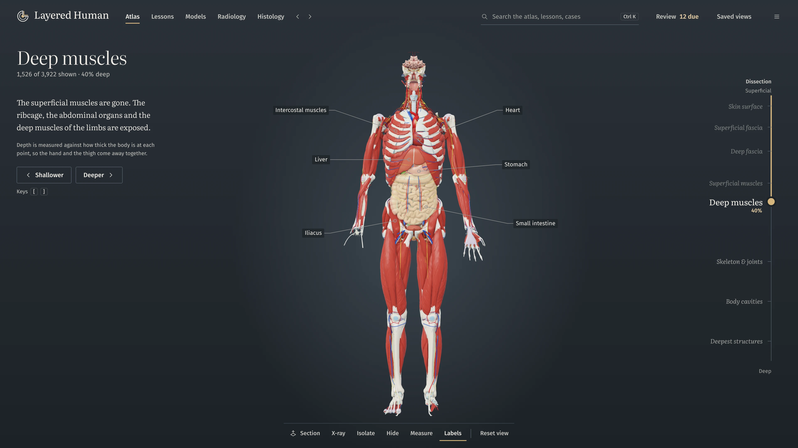</a><figcaption>Peel, 40%</figcaption></figure></div></div>
  <h4>The three side by side, at actual size</h4>
<div class="grid tall"><figure class="thumb tall"><a href="renders/checkpoint-2/gauge/1_atlas_crop.webp">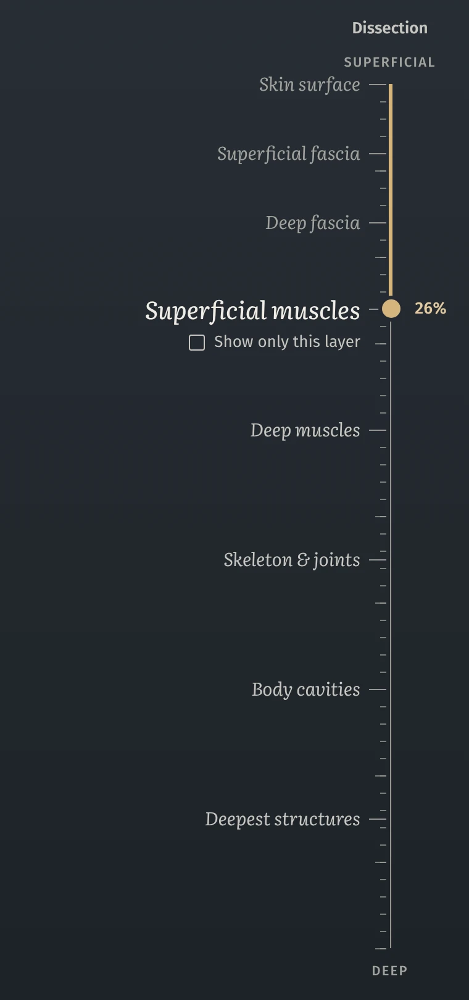</a><figcaption>1, Rule</figcaption></figure><figure class="thumb tall"><a href="renders/checkpoint-2/gauge/2_atlas_crop.webp">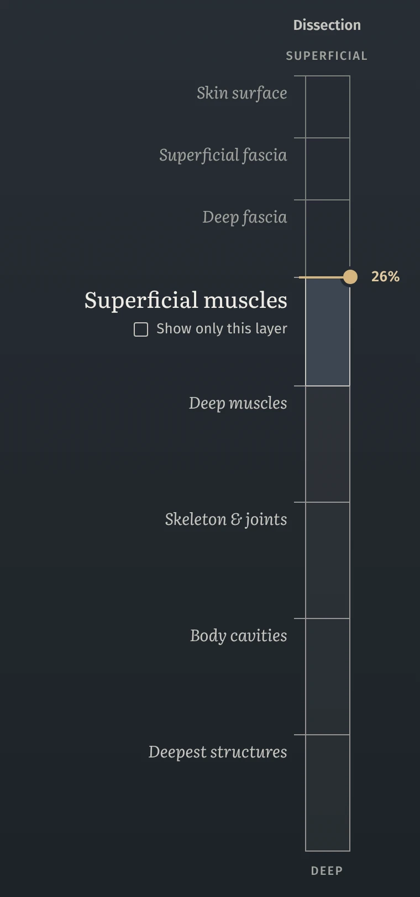</a><figcaption>2, Strata</figcaption></figure><figure class="thumb tall"><a href="renders/checkpoint-2/gauge/3_atlas_drag_crop.webp">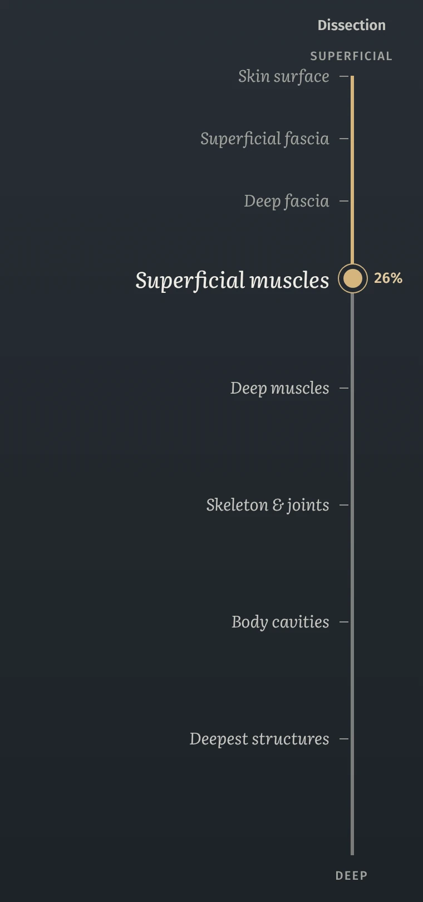</a><figcaption>3, Title, while dragging</figcaption></figure></div>
<article class="opt" id="gauge-1"><h3><span class="num">1</span>Rule</h3><p>A measuring rule hung beside the specimen, with fine marks every 2% and the eight stops named in italic at their real depths.</p><figure class="big"><a href="renders/checkpoint-2/gauge/1_atlas.webp">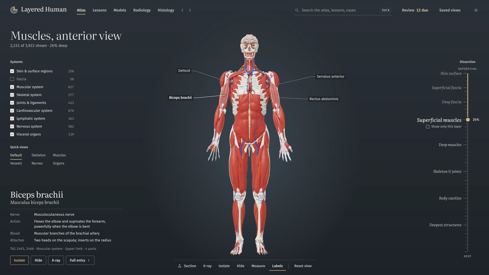</a><figcaption>Atlas, 26%</figcaption></figure><div class="grid tall"><figure class="thumb tall"><a href="renders/checkpoint-2/gauge/1_peel_crop.webp">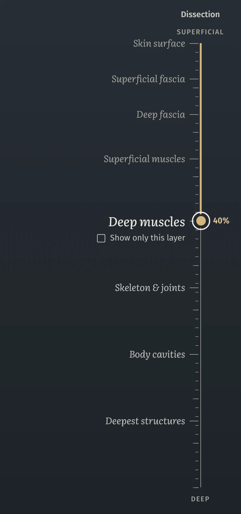</a><figcaption>Peel, keyboard focus</figcaption></figure><figure class="thumb tall"><a href="renders/checkpoint-2/gauge/1_peel_only_crop.webp">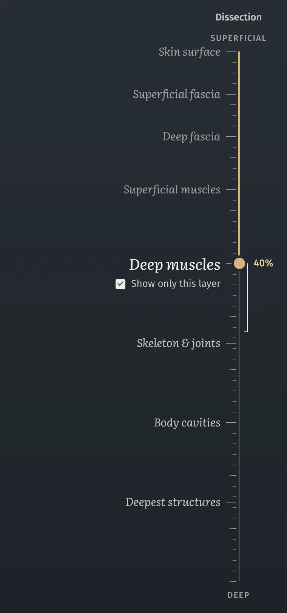</a><figcaption>Show only this layer, on</figcaption></figure></div><div class="grid"><figure class="thumb"><a href="renders/checkpoint-2/gauge/1_atlas_umber.webp">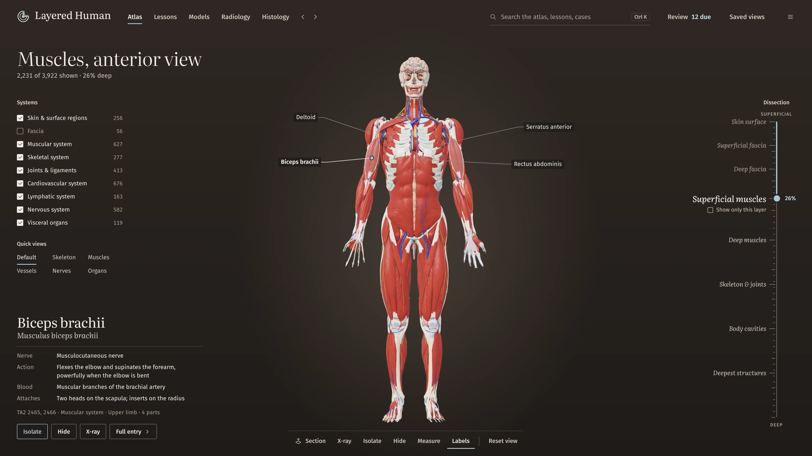</a><figcaption>Atlas in Umber</figcaption></figure><figure class="thumb"><a href="renders/checkpoint-2/gauge/1_peel.webp">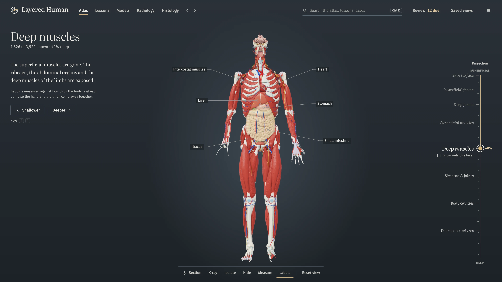</a><figcaption>Peel screen</figcaption></figure></div></article>
<article class="opt" id="gauge-2"><h3><span class="num">2</span>Strata <span class="rec">recommended</span></h3><p>A core sample: eight stacked bands, each as tall as its layer, with the current band lit; clicking a band means show only this layer.</p><p class="why">The agent&rsquo;s pick: it makes &ldquo;layered&rdquo; literal, and the layer you are in is something you can point at. I would pick 1, Rule, instead. The website&rsquo;s first screen already uses the rule, so the app and the site would match. Strata&rsquo;s lit band is faint on its own (it reads by its edges), and it needs a small change to how &ldquo;Show only this layer&rdquo; works so that the lit band is exactly what stays.</p><figure class="big"><a href="renders/checkpoint-2/gauge/2_atlas.webp">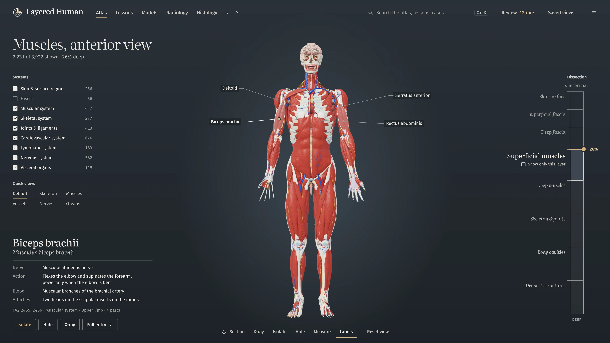</a><figcaption>Atlas, 26%</figcaption></figure><div class="grid tall"><figure class="thumb tall"><a href="renders/checkpoint-2/gauge/2_peel_crop.webp">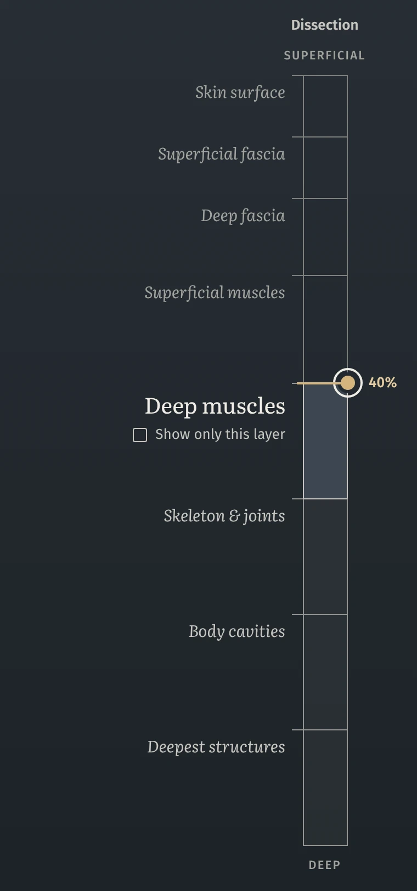</a><figcaption>Peel, keyboard focus</figcaption></figure><figure class="thumb tall"><a href="renders/checkpoint-2/gauge/2_peel_only_crop.webp">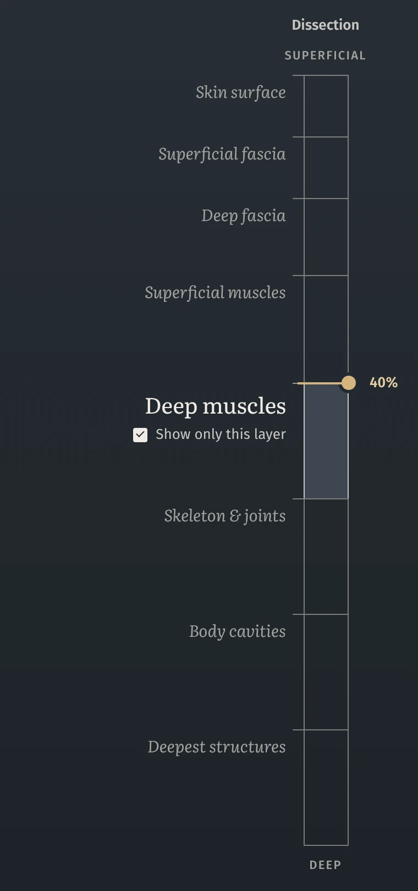</a><figcaption>Show only this layer, on</figcaption></figure></div><div class="grid"><figure class="thumb"><a href="renders/checkpoint-2/gauge/2_atlas_umber.webp">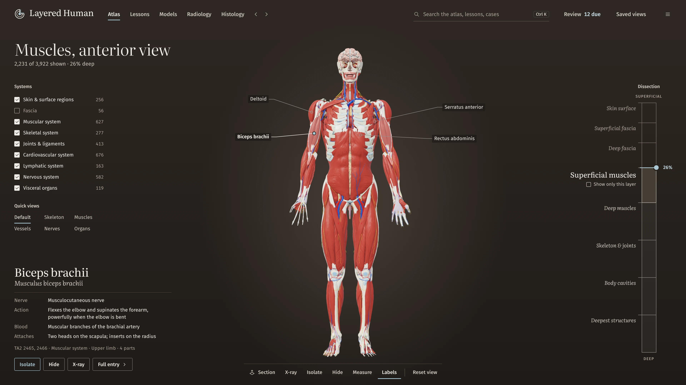</a><figcaption>Atlas in Umber</figcaption></figure><figure class="thumb"><a href="renders/checkpoint-2/gauge/2_peel.webp">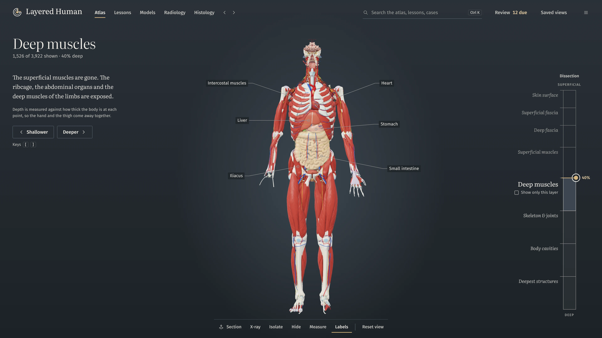</a><figcaption>Peel screen</figcaption></figure></div></article>
<article class="opt" id="gauge-3"><h3><span class="num">3</span>Title</h3><p>The page title carries the depth, such as &ldquo;Superficial muscles, 26% deep&rdquo;, and the gauge shrinks to a slim rule whose names appear only while you drag it or focus it.</p><figure class="big"><a href="renders/checkpoint-2/gauge/3_atlas.webp">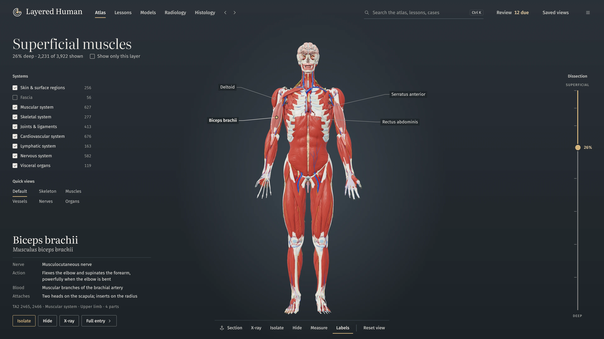</a><figcaption>Atlas, 26%</figcaption></figure><div class="grid"><figure class="thumb"><a href="renders/checkpoint-2/gauge/3_atlas_title_crop.webp">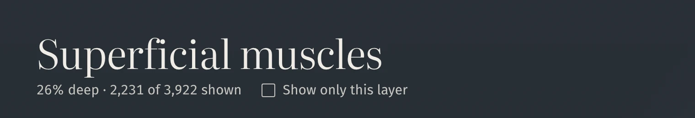</a><figcaption>The title, actual size</figcaption></figure><figure class="thumb"><a href="renders/checkpoint-2/gauge/3_atlas_drag.webp">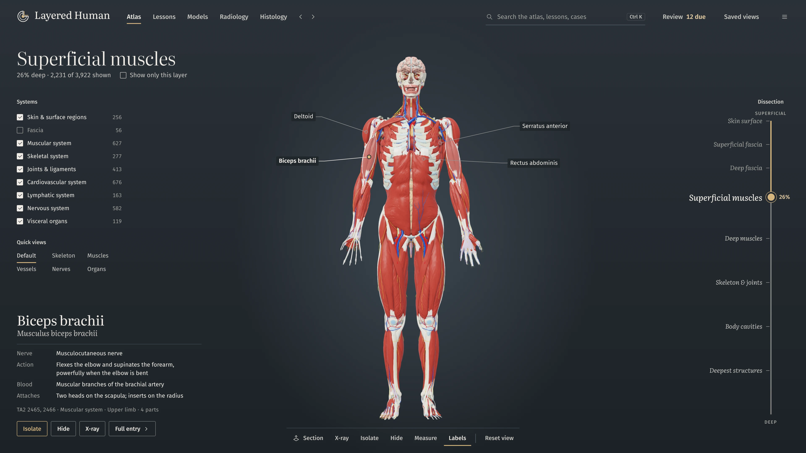</a><figcaption>While dragging</figcaption></figure><figure class="thumb"><a href="renders/checkpoint-2/gauge/3_peel_focus.webp"></a><figcaption>Keyboard focus</figcaption></figure><figure class="thumb"><a href="renders/checkpoint-2/gauge/3_atlas_umber.webp">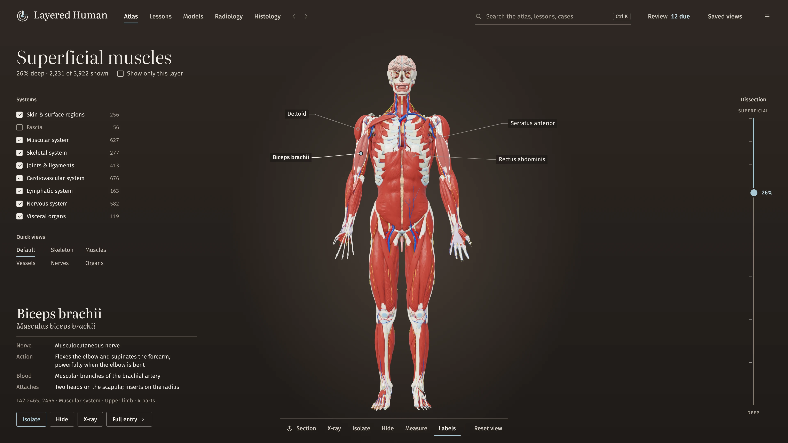</a><figcaption>Atlas in Umber</figcaption></figure></div></article>
  <div class="notes-wrap"><h4>Notes</h4><ul class="notes">
    <li>Option 3 drops the descriptive title &ldquo;Muscles, anterior view&rdquo;, and its checkbox ends up far from the gauge.</li>
    <li>In all three, the up arrow goes shallower, to match the picture. That is the opposite of most sliders.</li>
  </ul></div>
</section>

<section id="libraries" aria-labelledby="lib-h">
  <h2 id="lib-h">C. The libraries</h2>
  <p class="lede">Lessons and Histology are where students pick what to study next. Models already stands its specimens lit on the wall; the question is how much of that to give the other two. Each option is shown on Lessons and on a new Histology library screen.</p>
  <div class="today"><h4>Today</h4><div class="grid"><figure class="thumb"><a href="renders/checkpoint-2/library/before_lessons.webp"></a><figcaption>Lessons</figcaption></figure><figure class="thumb"><a href="renders/checkpoint-2/library/before_histology.webp">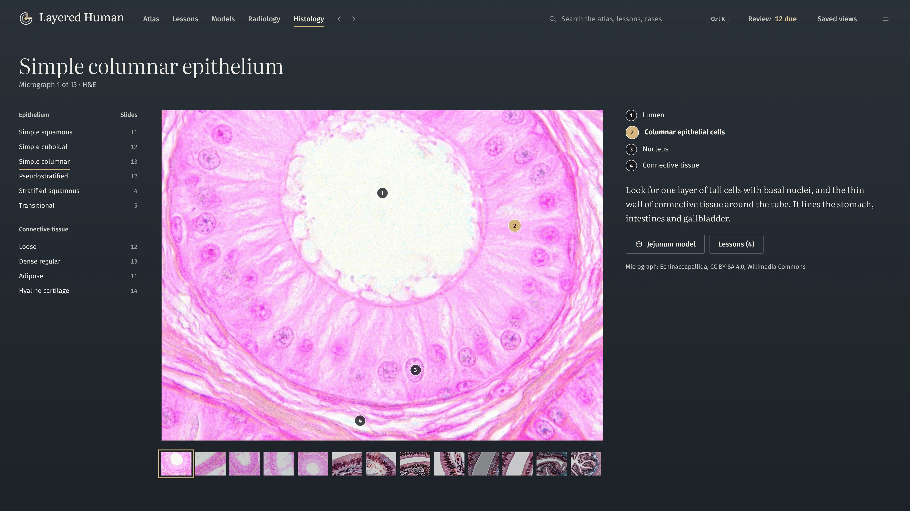</a><figcaption>Histology, a slide open</figcaption></figure><figure class="thumb"><a href="renders/checkpoint-2/library/before_models.webp"></a><figcaption>Models, the vitrine look</figcaption></figure></div></div>
<article class="opt" id="library-1"><h3><span class="num">1</span>Catalogue</h3><p>Typed lists, like an index card drawer: a number, a title, progress and a count, with a small slide picture beside each tissue.</p><div class="grid glance"><figure class="thumb"><a href="renders/checkpoint-2/library/1_lessons.webp">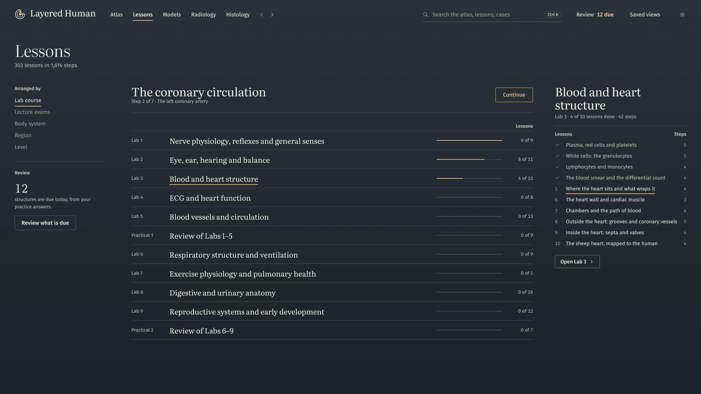</a><figcaption>Lessons</figcaption></figure><figure class="thumb"><a href="renders/checkpoint-2/library/1_histology.webp"></a><figcaption>Histology</figcaption></figure></div><div class="grid"><figure class="thumb"><a href="renders/checkpoint-2/library/1_lessons_crop.webp">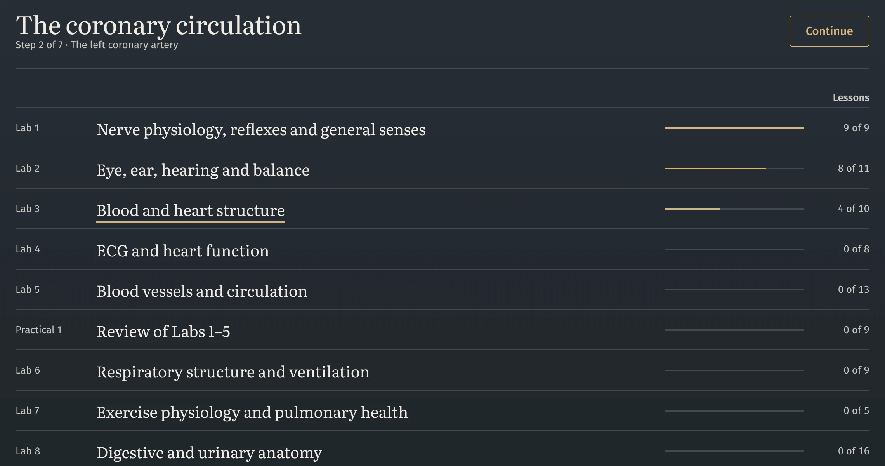</a><figcaption>Lessons, actual size</figcaption></figure><figure class="thumb"><a href="renders/checkpoint-2/library/1_histology_crop.webp">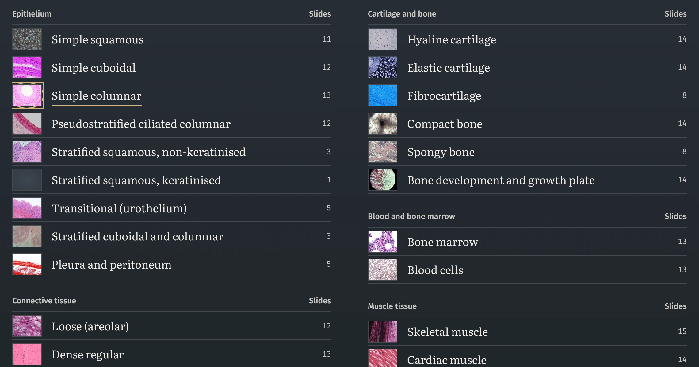</a><figcaption>Histology, actual size</figcaption></figure><figure class="thumb"><a href="renders/checkpoint-2/library/1_lessons_prussian.webp">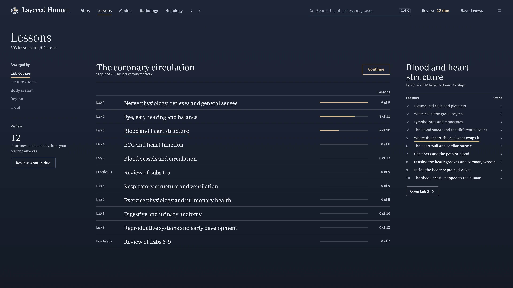</a><figcaption>Lessons in Prussian</figcaption></figure></div></article>
<article class="opt" id="library-2"><h3><span class="num">2</span>Vitrines</h3><p>Every lab and every tissue stands lit on the wall with its caption under it, as Models does now.</p><div class="grid glance"><figure class="thumb"><a href="renders/checkpoint-2/library/2_lessons.webp">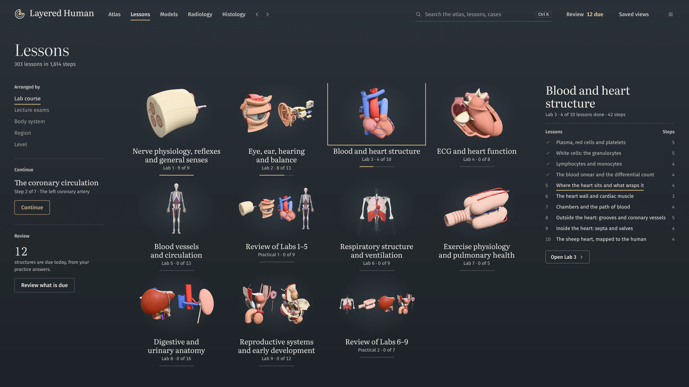</a><figcaption>Lessons</figcaption></figure><figure class="thumb"><a href="renders/checkpoint-2/library/2_histology.webp">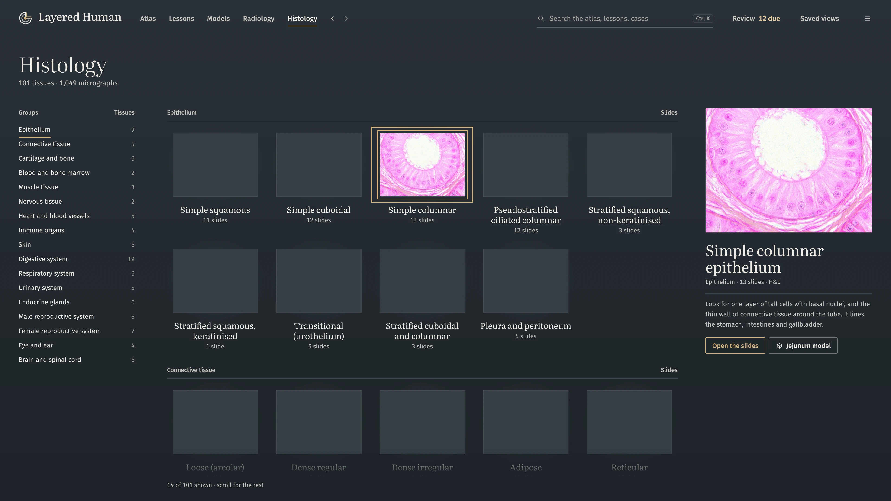</a><figcaption>Histology</figcaption></figure></div><div class="grid"><figure class="thumb"><a href="renders/checkpoint-2/library/2_lessons_crop.webp">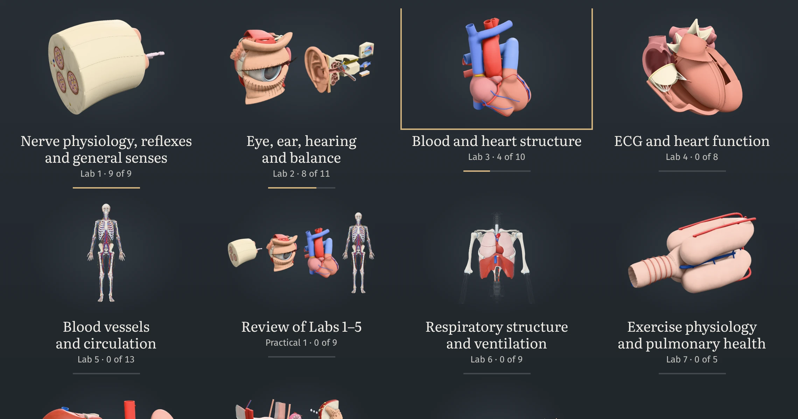</a><figcaption>Lessons, actual size</figcaption></figure><figure class="thumb"><a href="renders/checkpoint-2/library/2_histology_crop.webp">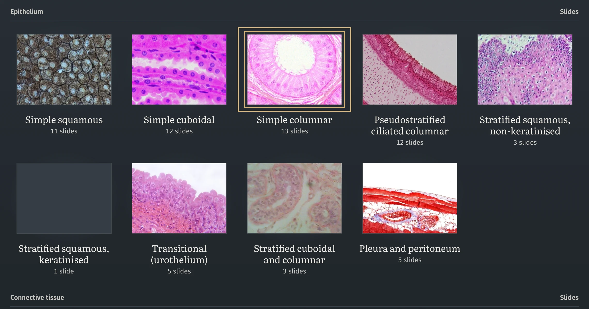</a><figcaption>Histology, actual size</figcaption></figure><figure class="thumb"><a href="renders/checkpoint-2/library/2_lessons_prussian.webp"></a><figcaption>Lessons in Prussian</figcaption></figure></div></article>
<article class="opt" id="library-3"><h3><span class="num">3</span>Lit row <span class="rec">recommended</span></h3><p>Three lit vitrines come first, for what you do next (Continue, Review and the next lab, or the last tissue and its two neighbours), and the catalogue of option 1 follows.</p><p class="why">The agent&rsquo;s pick, and mine: the museum moment goes where the eye lands first, on what you do next, and the fast list stays where you scan. Vitrines is the most beautiful, but it shows 14 of 101 tissues at a time and needs about 26 new lab figures.</p><div class="grid glance"><figure class="thumb"><a href="renders/checkpoint-2/library/3_lessons.webp">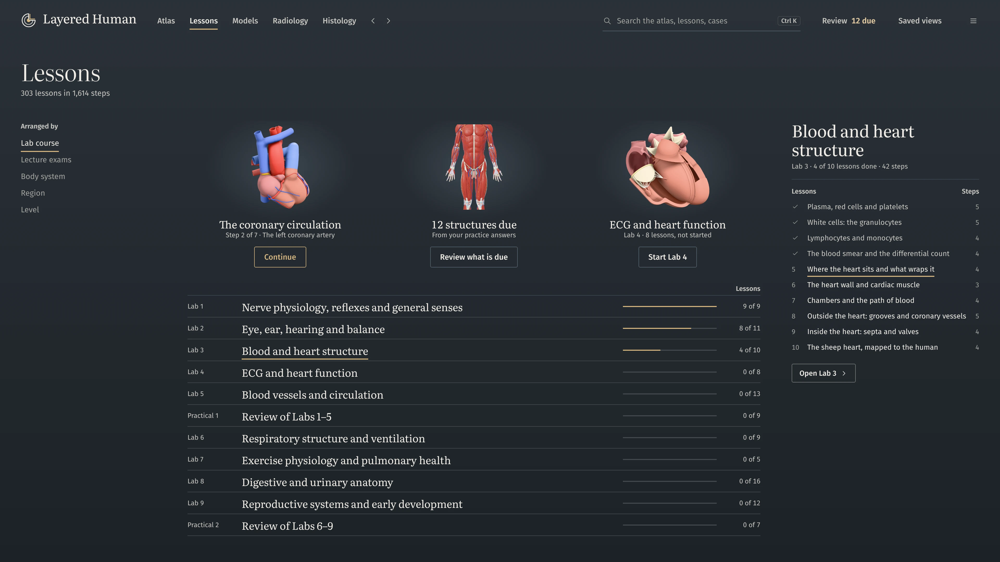</a><figcaption>Lessons</figcaption></figure><figure class="thumb"><a href="renders/checkpoint-2/library/3_histology.webp"></a><figcaption>Histology</figcaption></figure></div><div class="grid"><figure class="thumb"><a href="renders/checkpoint-2/library/3_lessons_crop.webp"></a><figcaption>Lessons, actual size</figcaption></figure><figure class="thumb"><a href="renders/checkpoint-2/library/3_histology_crop.webp"></a><figcaption>Histology, actual size</figcaption></figure><figure class="thumb"><a href="renders/checkpoint-2/library/3_lessons_prussian.webp"></a><figcaption>Lessons in Prussian</figcaption></figure></div></article>
</section>

<section id="rooms" aria-labelledby="rooms-h">
  <h2 id="rooms-h">New rooms and states</h2>
  <p class="lede">These are not choices. Look them over and flag anything that seems off.</p>
  <article class="state"><h4>The model viewer</h4><p>Click the kidney in Models and it opens into its own room: the parts list on the left, the model under the light, its thirteen stored views as a strip beneath, and the Reveal controls on the right, laid out like the gauge.</p>
<div class="grid glance"><figure class="thumb"><a href="renders/checkpoint-2/viewer/viewer.webp"></a><figcaption>The kidney, as it opens</figcaption></figure><figure class="thumb"><a href="renders/checkpoint-2/viewer/viewer_close.webp"></a><figcaption>The close view: the nephron, enlarged 15 times</figcaption></figure></div>
<div class="grid five"><figure class="thumb"><a href="renders/checkpoint-2/viewer/parts_crop.webp"></a><figcaption>Parts, actual size</figcaption></figure><figure class="thumb"><a href="renders/checkpoint-2/viewer/reveal_crop.webp"></a><figcaption>Reveal, actual size</figcaption></figure><figure class="thumb"><a href="renders/checkpoint-2/viewer/views_crop.webp"></a><figcaption>Stored views, actual size</figcaption></figure><figure class="thumb"><a href="renders/checkpoint-2/viewer/models_hover.webp"></a><figcaption>Models, the kidney under the pointer</figcaption></figure><figure class="thumb"><a href="renders/checkpoint-2/viewer/viewer_umber.webp"></a><figcaption>Close view in Umber</figcaption></figure></div>
  </article>
  <article class="state" id="states"><h4>Search, as a catalogue drawer</h4><p>Ctrl K drops a dark drawer from the header, with results grouped by kind, Latin names in italic and the system on the line below; the results are what the app&rsquo;s own search returns for &ldquo;biceps&rdquo;.</p>
<div class="grid"><figure class="thumb"><a href="renders/checkpoint-2/states/before_atlas.webp"></a><figcaption>Before</figcaption></figure><figure class="thumb"><a href="renders/checkpoint-2/states/search_open.webp"></a><figcaption>Open, &ldquo;biceps&rdquo;</figcaption></figure><figure class="thumb"><a href="renders/checkpoint-2/states/search_empty.webp"></a><figcaption>Nothing found, &ldquo;bycep&rdquo;</figcaption></figure></div>
<div class="grid"><figure class="thumb"><a href="renders/checkpoint-2/states/search_open_crop.webp"></a><figcaption>The drawer, actual size</figcaption></figure><figure class="thumb"><a href="renders/checkpoint-2/states/search_empty_crop.webp"></a><figcaption>Nothing found, actual size</figcaption></figure><figure class="thumb"><a href="renders/checkpoint-2/states/search_open_charcoal.webp"></a><figcaption>In Charcoal</figcaption></figure></div>
  </article>
  <article class="state"><h4>A lesson that points at the model</h4><p>Terms with a label get a brass hairline; hover the term or its label and the pair lights up together, and hovering a step dot names that step.</p>
<div class="grid"><figure class="thumb"><a href="renders/checkpoint-2/states/before_lesson.webp"></a><figcaption>Before</figcaption></figure><figure class="thumb"><a href="renders/checkpoint-2/states/lesson_hover_term.webp"></a><figcaption>Hovering a term</figcaption></figure><figure class="thumb"><a href="renders/checkpoint-2/states/lesson_hover_label.webp"></a><figcaption>Hovering a label</figcaption></figure><figure class="thumb"><a href="renders/checkpoint-2/states/lesson_hover_dot.webp"></a><figcaption>Hovering a step dot</figcaption></figure></div>
<div class="grid"><figure class="thumb"><a href="renders/checkpoint-2/states/lesson_hover_term_crop.webp"></a><figcaption>The term, actual size</figcaption></figure><figure class="thumb"><a href="renders/checkpoint-2/states/lesson_hover_term_label_crop.webp"></a><figcaption>Its label, actual size</figcaption></figure><figure class="thumb"><a href="renders/checkpoint-2/states/lesson_hover_dot_crop.webp"></a><figcaption>The step line, actual size</figcaption></figure></div>
  </article>
  <article class="state"><h4>Practice feedback in the model</h4><p>A wrong click gets a plain ring and the name of what you clicked; a right answer gets a brass ring and &ldquo;Yes&rdquo;; twelve ticks along the foot show the session.</p>
<div class="grid"><figure class="thumb"><a href="renders/checkpoint-2/states/before_practice.webp"></a><figcaption>Before</figcaption></figure><figure class="thumb"><a href="renders/checkpoint-2/states/practice_wrong.webp"></a><figcaption>A wrong click</figcaption></figure><figure class="thumb"><a href="renders/checkpoint-2/states/practice_right.webp"></a><figcaption>A right answer</figcaption></figure></div>
<div class="grid five"><figure class="thumb"><a href="renders/checkpoint-2/states/practice_wrong_crop.webp"></a><figcaption>Wrong click, actual size</figcaption></figure><figure class="thumb"><a href="renders/checkpoint-2/states/practice_right_card_crop.webp"></a><figcaption>The card, actual size</figcaption></figure><figure class="thumb"><a href="renders/checkpoint-2/states/practice_ticks_crop.webp"></a><figcaption>The ticks, actual size</figcaption></figure><figure class="thumb"><a href="renders/checkpoint-2/states/practice_modes_crop.webp"></a><figcaption>The mode list, actual size</figcaption></figure><figure class="thumb"><a href="renders/checkpoint-2/states/practice_wrong_umber.webp"></a><figcaption>In Umber</figcaption></figure></div>
  </article>
</section>

<section id="gaps" aria-labelledby="gaps-h">
  <h2 id="gaps-h">What is not finished</h2>
  <p class="lede">So that nothing here looks more finished than it is:</p>
  <ul class="notes">
    <li>The model viewer&rsquo;s label points were placed by eye; the kidney has no picking data yet. Seven of its thirteen view tiles are empty, because those views have no render.</li>
    <li>Two Histology slides are still grey placeholders (keratinised stratified squamous, and heart valves). A few micrographs are soft, and one shows a single panel of a larger figure with a trick the Qt app cannot use.</li>
    <li>In Vitrines, three lab figures stand in for the right ones, and in Lit row the Review figure stands in for what you actually practised.</li>
    <li>The practice and lesson marks are rings, not a tint on the structure, because these plates have no per-structure images. The search result after Enter is not drawn.</li>
    <li>&ldquo;Show only this layer&rdquo; switched on is shown in gauge close-ups only, and the counts do not change as you drag.</li>
    <li>On a phone, the body on the website&rsquo;s first screen sits on a slightly lighter rectangle of wall: the plates carry their own light, and its edges show at that width.</li>
    <li>On the website, the selection at 16% is put together from the 8% picture, and &ldquo;peeled away&rdquo; at 40% was judged by eye.</li>  </ul>
</section>

<section id="answer" class="answer" aria-labelledby="answer-h">
  <h2 id="answer-h">How to answer</h2>
  <p>Reply with one line, for example:</p>
  <p class="reply">A1, B2, C3. Logo fine, site fine, viewer fine.</p>
  <p class="lede">Comments are welcome, such as &ldquo;A1, but numbers on the section&rdquo;. The next checkpoint follows from your picks: the chosen labels, gauge and libraries go into every screen and the website, with the new rooms and states and the new mark.</p>
</section>

<footer>Layered Human &middot; design checkpoint 2 &middot; 15 October 2026</footer>
</main>
